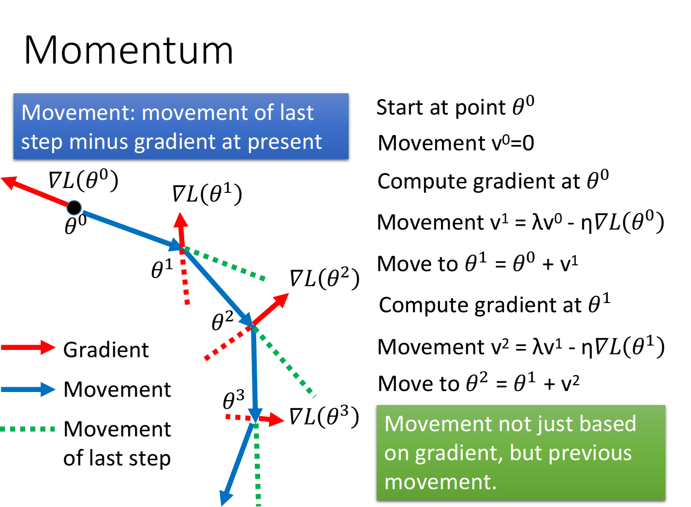

从前面的课程我们可以知道，像逻辑回归这样的问题其实只是深度学习神经元的其中一个例子。神经网络里，也是通过很多个这样子的运算级联，然后算出最终的结果。
这个部分很多内容都只是知道，但还没能理解，毕竟没有实打实的实践过，也许之后的理解会有所出入。
反向传播
之前我们写到的逻辑回归，因为纵深不大，所以直接求个导就能求出递推式子。但是对于深度神经网络这种纵深比较大的，层次比较多的，也许就不能这样了。这纵深是什么意思呢，我们以数学的方式理解一下吧。
逻辑回归的方程很简单，它只解决单层的问题：
但对于神经网络这种多层的：
如果直接用原本前向传播的方式对第一层的求偏导，那可能会涉及到后面所有的层。因为：
但是我们其实能看到，第层的偏微分会与层~层的都有关，这点有点像算法里的dp。因此我们可以逐层来求，先求。
依次求，就可以逐层求出所有的。
基本步骤
其实基本步骤这块，在之前classification的实验的样例代码里是写的很规范的，感觉就是告诉我们深度学习的模型可以这样训练。这些步骤也是当作参考吧，这是前人的经验，自己适用不适用还需要斟酌一下。
总结一下dl里面三个关键的步骤：
- 找一个function set(模型)
- 评判模型的好坏
- 选做好的模型
那么我们将数据输进去之后，我们需要做两件事：
- 知道数据在训练集上效果怎么样？是不是越来越好，还是怎么样
- 知道数据在测试集上效果怎么样？是不是越来越好，有没有过拟合
如果数据在训练集和测试机上表现都比较优秀，那我们的模型才可以说训练好。
首先，如果我们的数据在训练集上都表现的不好，或者在训练和测试都以相同的方式表现不好，就不要怪什么过拟合那些了。我在第一个实验linear regression里就犯了这样的错误，tm都还没拟合就想着过拟合了，把数据一打出来就能看到还没收敛的，加个正则化下去直接评分爆炸，而且正则也是随便乱加的。
训练集数据不行？
假如训练集数据不行，老师以前人的经验告诉了我们两个方法：
可以尝试一个新的激活函数
我们在logicistic regression里面用的是sigmoid做激活函数，那时因为它是从分类问题里推导出来的。如果全程用sigmoid可能会有这样的问题，sigmoid将每一层的输入无论这个值有多大，都将它压缩到了。因此，前面的参数的输入对后面我们的输出影响就很小，于是几乎接近0，其实从我们刚才看到的反向传播的推导公式里也可以看到，它是以连乘的形式计算的，而结果全是0到1之间的，多几层就变0了。这在深度学习里就叫做梯度消失。
ReLU
有些人提出了一些各种各样的激活函数，比如广泛运用的ReLU：
如果画成图就是像折线的形式，它的主要优势在于能简化网络以及防止梯度消失。因为在小于0的时候，它可以把参数甚至神经元给精简掉，而在大于0时不会像sigmoid那样压缩空间导致梯度消失，因为斜率就是。
MaxOut
之后有的人还扩展了ReLU，弄出了个Maxout的激活函数。
像max这种函数其实也是可以去微分的，毕竟a比较大的时候斜率是a，反之为b。其实Maxout可以说是ReLU的扩展情况，毕竟如果我们把a和b其中一个设为0，我们看到的就是Maxout。
可以尝试调整学习率
RMSProp
我们之前已经学过了adagrad这种方法来调整学习率，但adagrad对于linear model这种损失函数是bowl shape的可能比较有效，对于各种奇形怪状的可能就得稍稍改一下了。
有人提出了Adagrad的进阶版，可以动态调整学习率，RMSProp
我们看到它在平方根下包括两项，其实前面一项表示以前的平方和，后面一项表示最近的平方。如果我们把调大，表示更愿意相信以前的数据，如果调小表示更愿意相信最近的梯度。假如我们想要折衷，选个0.5然后再调整一下的值就是原本的adagrad了。
Momenteum
谷歌了一下，这个词的中文是动量，应该就是高中物理学的那个。它的理念也挺像那个的，假设你的球在一个光滑屏幕以(矢量)速度滑动，这时有一个球以(矢量)撞了我的球，那我的球的最终方向是。
这放深度学习里有什么意义呢，假设一个参数，现在前进的方向大小是，它是损失函数坡度给我们的建议。那我们也可以考虑前一个状态时的坡度，那我们最后前进的方向和大小就是两项加起来。

测试数据不行？
如果在训练数据上是没什么问题的，而随着训练数据匹配度变高而测试数据变低，也许就得考虑过拟合的情况。
正则化
这个之前已经讲过了，在loss function里加入正则项，防止过拟合，让所有参数都更向0靠近：
只不过，感觉这样的做法在很多时候都没办法带来更好的结果。
early stopping
很简单，在过拟合前终止训练
dropout
在训练时，随机去掉某个神经元或者输入，接着在测试时全部参数的权重都乘上。在最终，每个参数的期望值时相同的，至少在线性的激活函数成立。但很神奇，测试的结果是即使激活函数不是线性的，它依然可以工作。我们常用的pytorch model里面training默认是开启这项功能的。
为什么要deep?
曾经有过一个理论，单层的网络可以模拟任何的一个函数，这使得不少人当时就放弃了dl的想法。近一段时间，由于互联网的发展，数据量也变得大幅度的增加。于是，有很多人就认为dl是比平时需要更大量的数据才能办得到的，这时典型的对dl的误解。
我们都知道逻辑电路，假设有n位的输入，每种都对应一个输出。如果我们用两层逻辑电路实现，当然用个逻辑门是一定能实现出来的，直接枚举也就可以了。但是如果我们用多层实现，我们可以用个逻辑门就能实现了。
放dl也一样，它其实和逻辑门一样，是一个模块化的过程。比如对于区分男女长短头发，这样的一个四分类的问题。假如直接分，可以直接单输入，然后再加个隐藏层就输出4个。有时，我们拥有的长发男人的数量比较少，所以很可能就会对那块判断错误而判断到零一类上。但是，如果我们用多模块的方式取分类，假如先分男女，或者先分长短发，这是相对简单的多的问题，因为带男女label的照片都非常多，分对的概率是比较高的。那再分出男人之后，再进行识别是男的长发还是男的短发，我们由于需要识别的东西变少了，因此所需的数据量也变少，这就变相提高了效率。
dl多层次的网络其实就是采用了由机器来进行分类，原本不少人手工完成的东西都可以用机器模块化地分类。每一层都是一个层次的特征，分离出一种特征之后才进入下一层。这样就可以相对于单层网络来说提高了训练的效率。